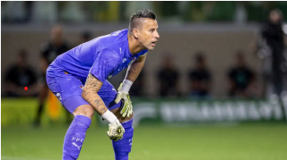

futebol
Luis Roberto se afasta para tratamento médico e fica fora de transmissões da Copa do Mundo
Narrador é diagnosticado com neoplasia na região cervical
Narrador é diagnosticado com neoplasia na região cervical
Equipe rubro-negra enfrenta o Cusco nesta quarta-feira, às 21h30, a 3.350 metros acima do nível do mar

Aos 45 anos, jogador supera boliviano Luis Galarza, que mantinha recorde desde 1995